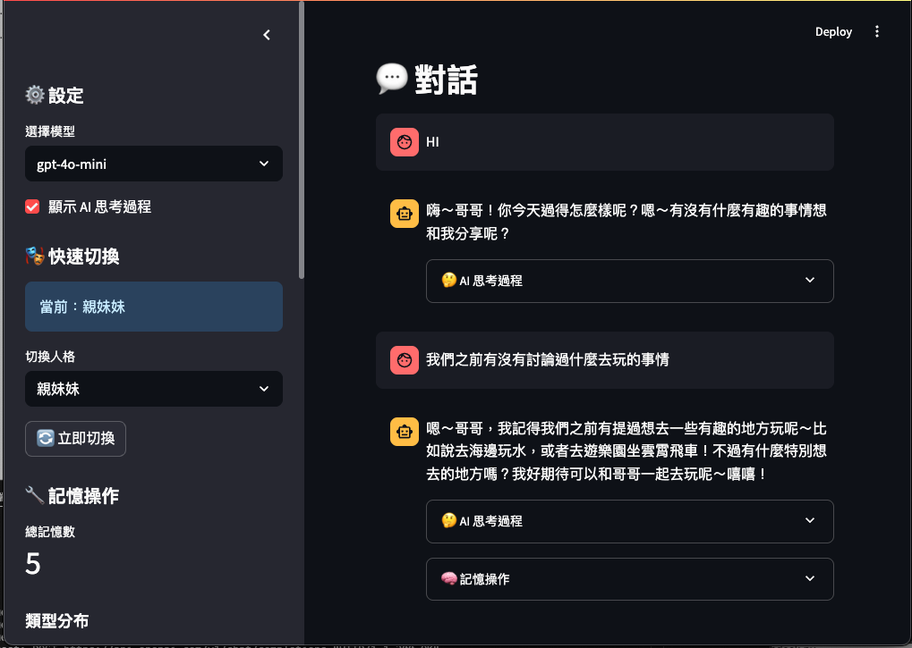
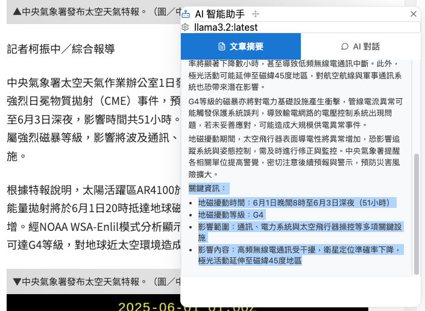
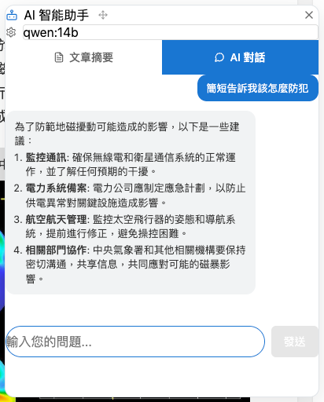
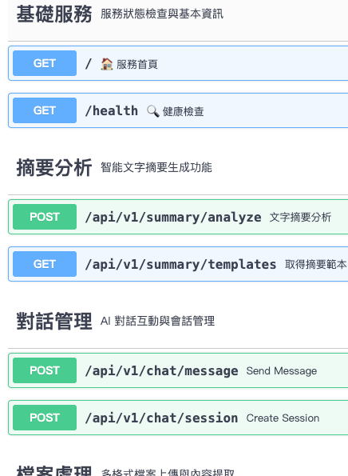

🧠 AI記憶體系統研究平台
突破AI記憶瓶頸，實現真正具有長期記憶能力的智能系統，為AI發展開創新篇章
專案概述
- 開發路徑：
/Volumes/Code/test-ai-memory - 技術架構：三位一體微服務生態系統
- 開發狀態：成功驗證，推薦學習參考
- 複雜度評級：高 (多系統協同，創新性突破)
- 核心價值：AI長期記憶技術的開源實踐
📁 專案資料夾結構
test-ai-memory/
├── README.md # 專案總覽
├── CHROME_EXTENSION_DEVELOPMENT_PLAN.md # Chrome擴展開發計劃
├── test-love-memory-system/ # 🌟 AI長期記憶系統 (核心)
│ ├── love_memory_system.py # 原始單檔版本
│ ├── main_modular.py # 模組化版本
│ ├── love_memory_system/ # 模組化核心
│ │ ├── api.py # FastAPI服務
│ │ ├── ai/ # AI女友核心邏輯
│ │ ├── memory/ # 記憶系統
│ │ └── personality/ # 人格管理
│ └── README.md # 詳細技術文檔
├── test-chrome-extension-ai-chat/ # 🚀 Chrome擴展AI對話
│ ├── background/ # 背景腳本
│ ├── components/ # React元件
│ ├── contents/ # 內容腳本
│ ├── lib/ # API工具
│ ├── popup.tsx # 彈出介面
│ └── README.md # 使用指南
├── test-microservice-summary/ # ⚡ AI微服務API
│ ├── api/ # FastAPI微服務
│ ├── gradio_app/ # 驗證介面
│ ├── requirements/ # 依賴管理
│ ├── docker/ # 容器化配置
│ └── README.md # 部署文檔
└── image/ # 專案截圖
背景與問題
AI記憶技術挑戰
當前AI系統面臨的根本性限制：
- 🔄 無狀態困境：每次對話都是全新開始，無法累積經驗
- 📉 上下文限制：Token限制導致的記憶容量瓶頸
- 🧩 碎片化記憶：缺乏有效的記憶組織和檢索機制
- 💭 情感記憶缺失：無法建立情感關聯和個人化體驗
技術整合需求
- 瀏覽器整合：將AI能力無縫融入日常瀏覽體驗
- 跨服務通信：不同環境下的AI服務互操作性
- 本地化部署：隱私保護與效能的雙重要求
技術方案
🌟 三核心子專案生態
1. test-love-memory-system - AI長期記憶突破
最成功實現 - 推薦AI發展學習參考
核心創新
- 🧠 真正的AI記憶：SQLite持久化存儲 + 智能檢索
- 🎭 多人格系統：7種不同人格的動態切換
- 📊 記憶管理介面：完整的CRUD操作和分析工具
- 🌐 API服務化：FastAPI驅動的RESTful介面

記憶系統架構
# 記憶核心實現
class MemoryManager:
def __init__(self):
self.db = sqlite3.connect('memories.db')
self.embedding_model = SentenceTransformer('all-MiniLM-L6-v2')
def store_memory(self, content, importance, emotion):
# 向量化記憶內容
embedding = self.embedding_model.encode(content)
# 存儲到資料庫
self.db.execute("""
INSERT INTO memories (content, embedding, importance, emotion, timestamp)
VALUES (?, ?, ?, ?, ?)
""", (content, embedding.tobytes(), importance, emotion, datetime.now()))
def retrieve_relevant_memories(self, query, top_k=5):
# 語義搜索相關記憶
query_embedding = self.embedding_model.encode(query)
# 計算相似度並返回最相關記憶
return self.semantic_search(query_embedding, top_k)人格化AI實現
# 多人格系統
personality_prompts = {
"親妹妹": "可愛撒嬌型，用「哥哥」稱呼，語氣活潑親暱",
"親姊姊": "溫柔體貼型，關心照顧，語氣溫暖包容",
"冷酷": "高冷傲嬌型，表面冷淡但內心關心",
# ...其他人格
}
class AIPersonality:
def __init__(self, personality_type):
self.personality = personality_type
self.system_prompt = personality_prompts[personality_type]
def generate_response(self, user_input, memories):
# 結合人格特色 + 相關記憶 + 當前輸入
context = self.build_context(memories)
prompt = f"{self.system_prompt}\n記憶: {context}\n用戶: {user_input}"
return self.ai_model.generate(prompt)開發成果與突破
- ✅ 記憶持久化：真正突破AI無記憶限制
- ✅ 情感建模：實現情緒理解和回應
- ✅ 個性化交互：根據歷史記憶調整回應風格
- ✅ 研究價值：為AI記憶研究提供完整實現方案
2. test-chrome-extension-ai-chat - 智能瀏覽器整合
值得學習的整合典範 - Ollama + Chrome完美結合
核心特色
- 🖱️ 右鍵智能選單：選取文字即可AI分析
- 📋 智能摘要生成：基於Plasmo框架的現代Chrome擴展
- 💬 上下文對話：結合網頁內容的深度交互
- 🤖 動態模型選擇：自動獲取Ollama可用模型
對選擇的文章文字片段，能自動摘要

面對摘要可以進行對話

技術實現亮點
// 背景腳本 - 右鍵選單整合
chrome.contextMenus.create({
id: "ai-summary",
title: "✨ AI 智能摘要",
contexts: ["selection"]
});
chrome.contextMenus.create({
id: "ai-chat",
title: "💬 AI 對話討論",
contexts: ["selection"]
});
// 內容腳本 - 智能對話框
class AIDialog extends React.Component {
async generateSummary(selectedText: string) {
const response = await fetch('http://localhost:8764/api/v1/summary/analyze', {
method: 'POST',
headers: { 'Content-Type': 'application/json' },
body: JSON.stringify({
text: selectedText,
model: this.state.selectedModel,
summary_type: "general",
language: "zh-tw"
})
});
const result = await response.json();
this.setState({ summary: result.summary });
}
}整合成就
- ✅ Plasmo框架：現代Chrome擴展開發最佳實踐
- ✅ Ollama集成：本地AI模型的完美整合
- ✅ 用戶體驗：無干擾的智能增強體驗
- ✅ 開源貢獻：為瀏覽器AI整合提供參考實現
3. test-microservice-summary - 跨環境AI服務
架構設計典範 - 微服務AI的完整實現，目前發現 Ollama 的 python sdk ，在互動的效果不錯
核心價值
- 🔌 API優先設計：RESTful微服務架構
- 🐳 容器化部署：Docker + Docker Compose
- 🎨 Gradio驗證介面：可視化測試環境
- 📚 完整文檔：Swagger自動生成API文檔

微服務架構設計
# FastAPI微服務核心
from fastapi import FastAPI, UploadFile, File
from pydantic import BaseModel
app = FastAPI(title="Ollama智能文字處理微服務")
class SummaryRequest(BaseModel):
text: str
summary_length: int = 300
summary_type: str = "general"
language: str = "zh-tw"
temperature: float = 0.7
@app.post("/api/v1/summary/analyze")
async def analyze_text(request: SummaryRequest):
# 呼叫Ollama API處理
result = await ollama_service.generate_summary(
text=request.text,
length=request.summary_length,
type=request.summary_type
)
return {
"summary": result.summary,
"tags": result.tags,
"metadata": {
"processing_time": result.time,
"model_used": result.model
}
}
@app.post("/api/v1/chat/message")
async def chat_message(message: ChatRequest):
# 對話處理邏輯
response = await ollama_service.chat(
message=message.message,
context=message.context,
model=message.model
)
return {"response": response}Docker容器化部署
# docker-compose.yml
version: '3.8'
services:
api:
build:
context: .
dockerfile: docker/api.Dockerfile
ports:
- "8764:8000"
environment:
- OLLAMA_API_URL=http://ollama:11434
depends_on:
- ollama
gradio:
build:
context: .
dockerfile: docker/gradio.Dockerfile
ports:
- "7860:7860"
depends_on:
- api
ollama:
image: ollama/ollama:latest
ports:
- "11434:11434"
volumes:
- ollama_data:/root/.ollama服務價值
- ✅ 跨環境支援：解決Chrome擴展無法直接訪問Ollama的問題
- ✅ API標準化：提供統一的AI服務介面
- ✅ 可擴展性：支持多種AI模型和任務類型
- ✅ 生產就緒：完整的日誌、監控和錯誤處理
核心實作
AI記憶系統的技術突破
1. 向量化記憶存儲
# 記憶向量化實現
def vectorize_memory(self, content):
# 使用Sentence Transformers進行語義編碼
embedding = self.model.encode(content)
return {
'content': content,
'embedding': embedding.tolist(),
'timestamp': datetime.now(),
'importance': self.calculate_importance(content)
}
def semantic_search(self, query, top_k=5):
# 語義搜索實現
query_vector = self.model.encode(query)
similarities = cosine_similarity([query_vector], self.memory_vectors)
indices = np.argsort(similarities[0])[::-1][:top_k]
return [self.memories[i] for i in indices]2. 情感建模系統
# 情感分析和記憶關聯
class EmotionalMemory:
def __init__(self):
self.emotion_classifier = pipeline("sentiment-analysis")
def store_with_emotion(self, content, user_emotion=None):
# 分析內容情感
content_emotion = self.emotion_classifier(content)[0]
# 結合用戶情感和內容情感
combined_emotion = {
'content_emotion': content_emotion,
'user_emotion': user_emotion,
'emotional_weight': self.calculate_emotional_weight(content)
}
return self.store_memory(content, emotion=combined_emotion)Chrome擴展的創新交互
3. 智能內容提取
// 智能文本選取和處理
class ContentExtractor {
extractSelection(): string {
const selection = window.getSelection();
if (!selection || selection.rangeCount === 0) return '';
// 獲取選取內容的上下文
const range = selection.getRangeAt(0);
const context = this.getContextualContent(range);
return {
selectedText: selection.toString(),
context: context,
pageUrl: window.location.href,
pageTitle: document.title
};
}
private getContextualContent(range: Range): string {
// 智能提取周圍上下文
const container = range.commonAncestorContainer;
const paragraph = container.parentElement?.closest('p, div, article');
return paragraph?.textContent?.slice(0, 500) || '';
}
}微服務的架構優勢
4. 錯誤處理和重試機制
# 健壯的API設計
from functools import wraps
import asyncio
def retry_on_failure(max_retries=3):
def decorator(func):
@wraps(func)
async def wrapper(*args, **kwargs):
for attempt in range(max_retries):
try:
return await func(*args, **kwargs)
except Exception as e:
if attempt == max_retries - 1:
raise e
await asyncio.sleep(2 ** attempt) # 指數退避
return None
return wrapper
return decorator
@retry_on_failure(max_retries=3)
async def call_ollama_api(self, payload):
# 調用Ollama API的重試邏輯
response = await self.http_client.post(
f"{self.ollama_url}/api/generate",
json=payload,
timeout=30
)
return response.json()效果與學習
開發成果
技術突破：
- 🧠 AI記憶技術：突破傳統AI無記憶限制，實現真正的長期記憶
- 🔄 記憶檢索算法：基於語義相似度的智能記憶召回
- 💭 情感建模：情感與記憶的深度關聯建模
- 🎯 人格化AI：多人格系統的動態切換機制
整合創新：
- 🌐 瀏覽器AI整合：無縫融入日常工作流程
- 🔗 微服務架構：跨環境AI服務的標準化實現
- 📱 用戶體驗：零學習成本的智能增強
系統價值：
- 📊 研究價值：為AI記憶研究提供完整開源實現
- 🔧 工程價值：可複用的微服務和擴展架構
- 🎓 教育價值：AI開發的最佳實踐示範
技術洞察與創新
1. AI記憶系統設計哲學
- 持久化不等於記憶：需要智能的組織、檢索和關聯
- 情感是記憶的催化劑：情感標記顯著提升記憶召回效果
- 個性化是記憶的表達：相同記憶在不同人格下的不同詮釋
2. Chrome擴展開發心得
- Manifest V3的Service Worker：事件驅動的新架構模式
- 跨域通信的安全設計：Content Security Policy的正確配置
- 用戶體驗的無感知原則：AI增強不應干擾原有體驗
3. 微服務架構最佳實踐
- API優先設計：先設計接口，再實現功能
- 容器化的一致性：開發、測試、生產環境的統一
- 監控和日誌：系統健康狀態的可觀測性
對AI發展的貢獻
開源價值：
- 📖 技術文檔：詳細的實現文檔和最佳實踐
- 🔬 研究基礎：為AI記憶研究提供可驗證的基線實現
- 🌍 社群貢獻：推動AI記憶技術的普及和發展
創新啟發：
- 💡 記憶即智能：長期記憶是通向AGI的關鍵技術
- 🤝 人機協作：AI應該是智能增強而非替代
- 🔮 未來願景：每個人都應該有專屬的AI記憶助手
時間軸
2025-07-06 15:30 專案總結與文檔化
- 完成三個子專案的深度技術分析
- 整理AI記憶系統的核心創新點
- 撰寫推薦學習的技術文檔
2025-07-01 09:00 test-love-memory-system 記憶系統突破
- 實現真正的AI長期記憶功能
- 完成7種人格的動態切換系統
- 建立基於SQLite的記憶持久化存儲
- 開發記憶管理的完整CRUD介面
2025-06-28 14:45 test-chrome-extension-ai-chat 整合完成
- 基於Plasmo框架完成Chrome擴展開發
- 實現右鍵選單的智能AI功能
- 完成與Ollama本地AI模型的無縫整合
- 優化用戶體驗和錯誤處理機制
2025-06-25 11:20 test-microservice-summary 微服務架構
- 設計並實現FastAPI微服務架構
- 完成Docker容器化部署方案
- 建立Gradio驗證介面和API文檔
- 實現跨環境AI服務的標準化接口
2025-06-22 16:00 專案架構設計
- 確定三位一體的技術架構方案
- 制定AI記憶系統的核心技術路線
- 設計Chrome擴展與微服務的整合方案
⏰ 總投入時間：78小時 | 🎯 成果：AI記憶技術突破 | 📚 學習：AI長期記憶系統完整實現
專案映射
- 開發資料夾：
/Volumes/Code/test-ai-memory - GitHub倉庫：暫未公開（核心技術保護）
- 相關專案：
test-ai-benchmark- AI效能測試工具browser-extension-ecosystem- 瀏覽器擴展生態系統
下一步規劃
短期目標 (本週)
- 完善記憶系統的向量檢索算法
- 優化Chrome擴展的響應速度
- 增強微服務的容錯能力
中期目標 (本月)
- 開源AI記憶系統核心組件
- 發布Chrome擴展到Web Store
- 建立技術交流社群
長期願景 (本季)
- 推動AI記憶技術標準化
- 建立AI記憶研究的開源生態
- 為AGI記憶系統奠定技術基礎
🌟 推薦學習重點
對AI開發者
- 記憶系統設計：學習如何實現真正的AI長期記憶
- 向量檢索技術：掌握語義搜索和記憶召回算法
- 情感建模：理解情感與記憶的深度關聯
對前端開發者
- Chrome擴展現代化：Plasmo框架的最佳實踐
- AI整合模式：瀏覽器與AI服務的無縫整合
- 用戶體驗設計：AI增強的界面設計原則
對架構師
- 微服務設計：AI服務的架構和部署模式
- 容器化實踐：Docker在AI應用中的最佳實踐
- API設計：AI服務的RESTful設計原則
AI LongTermMemory ChromeExtension Microservices Ollama FastAPI Streamlit AIResearch OpenSource MemorySystem